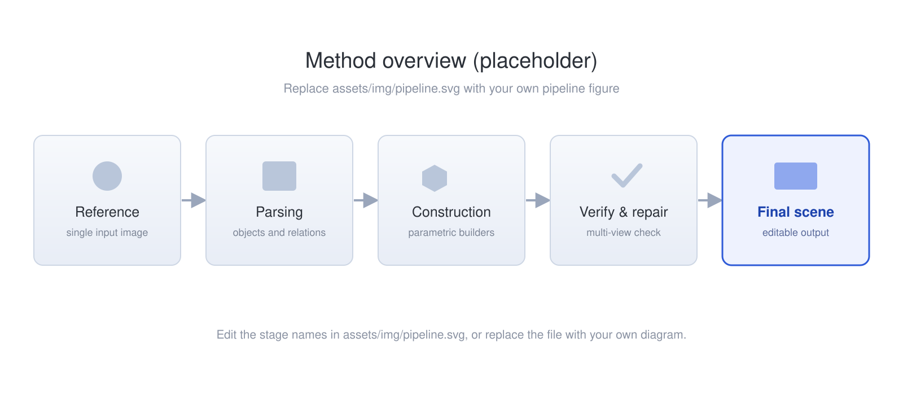

Anonymous submission · under double-blind review
Paper Title: A Method for High-Quality 3D Scene Generation
Subtitle line, e.g. from a single reference image to an editable, physically plausible scene
Abstract
We study the problem of turning a single reference image into a complete, editable 3D scene. Existing approaches either generate geometry that is visually plausible but structurally inconsistent, or rely on manual authoring that does not scale. We propose a programmatic construction pipeline that first parses the reference into a structured scene description, then assembles the scene from parametric building blocks inside a 3D content creation toolchain, and finally verifies and repairs the result against the reference. Replace this paragraph with your own abstract.
Across five scene categories and four baselines, our method improves structural fidelity and perceptual quality, while producing assets that remain editable and simulation-ready.
Method

assets/img/pipeline.svg with your pipeline figure.
- Structured parsing. The reference image is decomposed into a scene graph of objects, parts and spatial relations instead of being fitted as a single shape.
- Programmatic construction. Each node of the graph is realised by a parametric builder, so the output is an editable scene rather than a baked triangle soup.
- Verification and repair. Multi-view renders are compared against the reference and failing parts are re-parameterised until the scene is consistent from all viewpoints.
Scene-level Results
Five columns per scene: Reference, Blender Builder, Code2Worlds, VIGA, and ours. Hover a panel to zoom; click to open it full size.


assets/img/scenes/ and write the caption.


Fine-grained Comparison
Each row shows a full view with the region of interest marked, next to the magnified crop.


style values on .crop-box.


Video Results
Drop .mp4 files into assets/videos/; missing files fall back to a labelled placeholder.
Quantitative Results
| Method | FID ↓ | KID ↓ | CLIP ↑ | Structure ↑ | User pref. ↑ |
|---|---|---|---|---|---|
| Blender Builder | -- | -- | -- | -- | -- |
| Code2Worlds | -- | -- | -- | -- | -- |
| VIGA | -- | -- | -- | -- | -- |
| Ours | -- | -- | -- | -- | -- |
Optional: note the metric definitions, the number of scenes, and the protocol used for the user study.
Failure Cases


BibTeX
@inproceedings{anonymous2026submission,
title = {Paper Title: A Method for High-Quality 3D Scene Generation},
author = {Anonymous Authors},
booktitle = {Anonymous Submission},
year = {2026}
}
Update the entry once the paper is accepted; keep the author field anonymous until then.